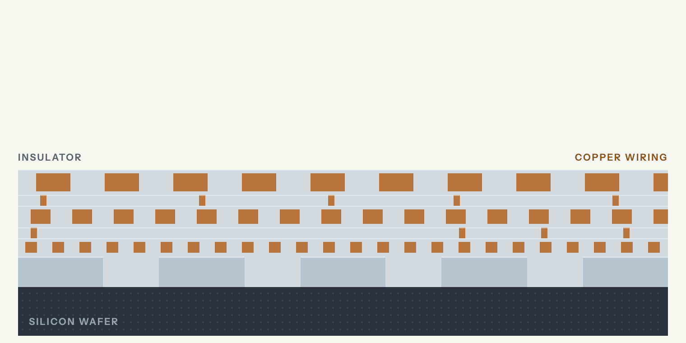

Chapter 06 · Stage 6 of 15
Deposition and Etch
Deposition and etch tools build a chip layer by layer. They are among the chipmaking tools where Chinese toolmakers gained the most share from 2019 to 2024.
Updated 20 October 2026Cite this chapterChapter PDF
Sharma, Yashvardhan. “Deposition and Etch.” Chip Supply Chain: How AI Chips Are Made. Updated 20 October 2026. https://chipsupplychain.org/deposition-and-etch/
The interactive chapter adds a 3D model, glossary definitions and flashcards.
Deposition and etch build the chip itself, one layer at a time. Deposition lays down a thin film, sometimes only a few atoms thick. Lithography prints a pattern on it. Etch then eats away everything the pattern does not protect, and the next film goes down on top. Making one chip takes 1,000 to 1,500 steps, the Semiconductor Industry Association estimated in 2025[1]. Some of the holes the etch cuts in memory chips are more than 50 times deeper than they are wide, like a finger-wide shaft about a meter deep[2]. The film has to coat them right to the bottom. The etch has to eat one material and leave the one beside it untouched. Applied Materials and Lam Research in America, Tokyo Electron in Japan and ASM International in the Netherlands make most of these machines. Chinese toolmakers have gained share in both kinds of tool since 2019.
In short
American companies held 60.3 percent of the world market for deposition tools in 2025, Japanese companies 14.0 percent and China-based companies 9.8 percent, by CSET's count from TechInsights data[3]. In etch and cleaning tools that year, American companies held 52.6 percent, Japanese companies 32.6 percent and China-based companies 10.1 percent[4].
Atomic layer deposition tools coat a hole's walls and floor as evenly as its rim[5]. China-based companies held only 2.6 percent of the world market for them in 2025, by CSET's count from TechInsights data[6]. The December 2024 US export rule targets tools for advanced atomic layer deposition and for coating holes more than 200 times deeper than they are wide[7].
- Who leads
- USApplied Materials 82.4% of physical vapor deposition tools in 2025, by CSET's count from TechInsights data[9]China 30.1% of revenue, year to Oct 2025
- USLam Research 51.2% of conductor etch tools in 2025[10]China 33.8% of revenue, year to Jun 2026
- JPTokyo Electron 55.9% of dielectric etch tools in 2025[11]China 34.1% of revenue, year to Mar 2026
- NLASM International 54.5% of atomic layer deposition tools in 2025[6]
- CNNaura 14.7% of physical vapor deposition tools in 2025[9]
- Where it is made
- USUnited States Applied Materials, Lam Research
- JPJapan Tokyo Electron, Kokusai Electric
- NLNetherlands ASM International, atomic layer deposition
- KRSouth Korea Large equipment buyer
- CNChina Naura, AMEC and Piotech, in the largest equipment market ($49.3B in 2025)
Applied Materials and Lam Research are the two largest deposition and etch suppliers. Applied Materials booked $28.368 billion of revenue in fiscal 2025[15]. Lam Research booked $23.233 billion in fiscal 2026[16].
How it works
One round of deposition and etch

- The wafer. A slice through one spot on a wafer, magnified until its layers show.
- Deposit. A thin film is laid over the whole wafer.
- Coat. A light-sensitive coating, the resist, is spun on top.
- Expose. Light shines through a stencil and changes the resist wherever it lands.
- Develop. A wash removes the resist the light reached, leaving the stencil’s pattern.
- Etch. A plasma cuts straight down through the film wherever the resist is gone.
- Strip. The leftover resist is removed. The pattern now sits in the film.
- Repeat. Insulator fills the gaps and the next layer goes on. Making one chip takes 1,000 to 1,500 steps, the Semiconductor Industry Association estimated in 2025.
Simplified cross-section. The layers are drawn much thicker than they are.
Most etch steps, and many deposition steps, happen in a vacuum chamber that holds one wafer at a time. A pump empties the chamber of air, and a measured flow of gas comes in. A radio-frequency field, an electric field that reverses millions of times a second, turns the gas into a plasma. The field splits the gas into charged ions and into neutral fragments called radicals, which are more reactive than whole molecules[17]. Batch furnaces such as Tokyo Electron's TELINDY PLUS instead heat as many as 125 wafers at once, usually without plasma, for oxidation, low-pressure chemical vapor deposition and some atomic layer deposition[18].
In most deposition steps, the gas carries the material the film will be made of. The molecules, or the radicals a plasma splits from them, land on the wafer and stick. The film builds up a few atoms at a time.
To coat the floor of a deep hole as thickly as its rim, the machine can work in cycles, a method called atomic layer deposition. First one gas settles in a single layer on every surface, and the pump removes the rest. Then a second gas reacts with that layer and nothing else, and the pump empties the chamber again. Each cycle adds a fraction of a layer of atoms wherever the gas reached, so the film grows as evenly on a hole's walls and floor as on its rim[5].
For etch, the gas attacks one material and leaves the one beside it. Wherever the photoresist covers the wafer, it shields the film beneath. Wherever it does not, the radicals react with the surface and turn it into a gas, which the pump carries away. A second field pulls the ions straight down at the wafer, so the etch cuts vertically and a narrow hole keeps its width as it deepens[17]. When the etch reaches the material underneath, which the gas was chosen not to touch, it slows almost to a stop, and the tool ends the step.
The US export controls describe each deposition or etch tool by the process it is designed to run[19].
Accenture and the Global Semiconductor Alliance estimated in 2020 that a part-finished chip can cross international borders 70 or more times on its way to the end customer[1]. The Semiconductor Industry Association repeated the figure in 2025[1].
Variants and trade-offs
Deposition families
The market sizes and leading shares below are 2025 figures from Georgetown University's Center for Security and Emerging Technology (CSET), based on data from the research firm TechInsights. CSET puts the deposition tool market at $26.2 billion[3]. It puts the dry etch market at $21.9 billion[8].
- Physical vapor deposition (PVD), which knocks atoms off a solid target and lands them on the wafer, was a $4.9 billion market in 2025[9]. Applied Materials held 82.4 percent of it and China's Naura 14.7 percent[9].
- Chemical vapor deposition (CVD), which reacts gases at the wafer surface to grow a film, was an $11.2 billion market in 2025, led by Applied Materials at 47 percent[20]. The plasma-enhanced version (PECVD) runs cooler and made up most of it, $7.5 billion[21].
- Atomic layer deposition (ALD) lays down less than one atomic layer at a time. Each step stops once every surface is covered, so it coats vertical walls as evenly as horizontal floors. US regulators say that even coating makes it important for building 3D structures, such as 3D DRAM, 3D NAND, and the FinFET and gate-all-around transistors in logic chips[5]. ASM International leads it with 54.5 percent of a $4.1 billion market in 2025[6].
- Epitaxy grows layers that line up with the crystal beneath them, using high-temperature CVD tools[22]. Electroplating deposits the copper used for wiring across the wafer[23].
Etch families
- Conductor etch, which cuts gates, metals and silicon, was a $12.2 billion market in 2025, led by Lam at 51.2 percent, by CSET's count from TechInsights data[10].
- Dielectric etch, which cuts the insulating oxides and nitrides between them, was an $8.7 billion market in 2025, led by Tokyo Electron at 55.9 percent, by CSET's count from TechInsights data[11].
- High-aspect-ratio etch cuts the deep, narrow channels that let 3D NAND stack layers of memory cells[24]. Lam says slight departures from a channel's intended shape can hurt yield[24]. Lam runs this etch well below 0 degrees Celsius[24]. It says its Cryo 3.0 technology can etch channels up to 10 microns deep whose width varies from top to bottom by less than 0.1 percent of their depth[24].
AI hardware needs sideways cuts, deeper holes and a second stack of metal wiring on the back of the wafer.
- Gate-all-around transistors need highly selective isotropic etch, which cuts sideways[25]. The US Bureau of Industry and Security (BIS) controls isotropic dry etch tools that remove silicon-germanium at least 100 times faster than silicon, a selectivity of 100:1 or more[19].
- HBM (high-bandwidth memory) needs holes etched straight through the silicon, called through-silicon vias (TSVs), so chips can be stacked and wired[26]. BIS controls the tools that etch these holes at aspect ratios (depth to width) of 10:1 or more and at rates above 7 microns a minute[13]. The control covers only tools that also keep the holes' depth even to within 2 percent across the wafer[13].
- Backside power delivery moves the wires that carry power to the back of the wafer[27]. In July 2024 Applied Materials said it expected backside power to add $1 billion to the market for its wiring tools, for every 100,000 wafers a month of new fab capacity[28].
Who makes it
The industry association SEMI put world sales of chipmaking equipment at $135.1 billion in 2025, up 15 percent from $117.1 billion[30]. Sales of wafer processing equipment, the category that includes deposition and etch tools, rose 12 percent[30].
No one firm dominates deposition and etch the way ASML dominates lithography. In dry etch, CSET's count for 2025 from TechInsights data puts Lam Research at 41.1 percent, Tokyo Electron at 23.4 percent and Applied Materials at 17.4 percent[8]. Tokyo Electron's own results presentation, citing Gartner, gives it 23 percent of dry etch, 27 percent of deposition systems (furnace, ALD and low-pressure CVD tools) and 15 percent of ALD in 2025[29]. The same presentation, again citing Gartner, gives it 91 percent of coater/developers in 2025[29]. These machines coat wafers with photoresist and develop the pattern after lithography.
ASM International, the atomic layer deposition specialist, reached a record EUR 3.2 billion of revenue in 2025 as customers built 2 nm gate-all-around capacity[31]. Molybdenum ALD, a new use of its tools that deposits the metal molybdenum, entered volume production that year[31].
What the world spent on chipmaking equipment$B
| 2024 | 117.1 $B |
|---|---|
| 2025 | 135.1 $B |
Source: SEMI, Worldwide Semiconductor Equipment Market Statistics
China and the controls
China is the tool vendors' largest market, buying $49.3 billion of equipment in 2025, half a percent less than in 2024[30]. Taiwan's spending rose 90 percent to $31.5 billion[30]. South Korea's rose 26 percent to $25.8 billion[30]. China still takes a large share of every major vendor's sales.
- Tokyo Electron: 34.1 percent of sales in the year to March 2026, down from 41.7 percent[32]. It was 30.4 percent in the quarter to June 2026[33].
- Lam Research: about 34 percent of revenue in the year to June 2026, the same as a year earlier[34].
- Applied Materials: 28 percent in the third fiscal quarter of 2026, down from 35 percent a year earlier[35].
- ASM International: more than 30 percent of 2025 revenue[31].
Between 2019 and 2024, by CSET's analysis of TechInsights data, China-based suppliers went from 2 to 7 percent of deposition and from under 3 to almost 9 percent of etch and clean[12]. In ALD they gained no share and held less than 1 percent in 2024[12].
CSET's newer analysis of data that TechInsights published in July 2026 puts them at 9.8 percent of deposition in 2025[3]. They held 10.1 percent of etch and clean that year[4]. In dry etch alone their share was 12.4 percent[8]. In ALD they held 2.6 percent in 2025, most of it from Piotech[6].
The Chinese toolmaker AMEC alone held 12.4 percent of dielectric etch in 2025, by CSET's count from TechInsights data[11]. Its revenue was RMB 12.385 billion that year, up about 36.62 percent, and it spent RMB 3.744 billion on research and development, 30.2 percent of sales[36].
The United States tightened its export controls at least five times between 2022 and 2025.
- October 2022. The 7 October interim final rule required a license for certain chipmaking equipment, and for some activities by US persons that support the making of certain chips in China[37]. It also extended US license rules to more foreign-made items bound for 28 Chinese entities on the Entity List, the US list of foreign firms that exporters need a license to supply[37].
- October 2023. The October rule, effective 17 November, rewrote the equipment entries[38]. It added sideways (isotropic) and vertical (anisotropic) dry etch (ECCN 3B001.c.1), spatial ALD (3B001.d.9), low-fluorine tungsten ALD and CVD (3B001.d.10) and carbon hard mask PECVD (3B001.d.5)[5].
- December 2024. BIS controlled 24 more types of equipment and three types of software, and added 140 entities to the Entity List[14]. The new equipment entries include TSV etch, and deposition into features with aspect ratios above 200:1[39]. BIS also wrote a foreign direct product rule that reaches some tools built outside the United States[14]. The rule largely exempts foreign-made tools exported by firms located in Japan, the Netherlands and the 31 other countries it lists, whose governments can control these tools themselves[40]. Japan added advanced chipmaking equipment to its control list on 23 July 2023[41].
- September 2025. BIS removed the Chinese units of Samsung and SK hynix, and Intel Semiconductor (Dalian), from the Validated End-User program, effective 31 December 2025[42]. From that date, US tools bound for them need a license[42]. BIS estimated that the change would add 1,000 license applications a year[42].
- September 2025. The Affiliates Rule extended Entity List restrictions to any company at least 50 percent owned by a listed entity[43]. BIS then suspended it until 9 November 2026[44].
The rules apply to the toolmakers as well as to their customers. In fiscal 2026 Applied Materials took a $253 million charge to settle an export controls compliance matter with BIS[35].
Of the tools in the chart below, China-based suppliers have their largest share in dry stripping, which clears leftover photoresist off the wafer and was a $314.6 million market in 2025, by CSET's count from TechInsights data[45]. Kokusai held 35.7 percent of it, Mattson Technology 22.6 percent and Naura 8.3 percent[45]. Mattson is a US-based firm that Beijing E-Town bought in 2016[12].
The chokepoint
Deposition and etch tools are a chokepoint, but a weaker one than lithography. Most deposition and etch steps have three or four credible vendors. Atomic layer deposition has at least five[6]. The December 2024 rule targets tools for advanced atomic layer deposition and for coating holes more than 200 times deeper than they are wide[7].
Review questions
Open a question to see its answer.
What do deposition and etch do?
Deposition lays down a thin film, and etch cuts away the parts the printed pattern leaves exposed.
Making one chip takes 1,000 to 1,500 steps, the Semiconductor Industry Association estimated in 2025. Reread: How it works
Who makes most deposition and etch tools?
Four firms: Applied Materials, Lam Research, Tokyo Electron and ASM International.
They are American, Japanese and Dutch. No single firm dominates the way ASML does in lithography. Reread: Who makes it
How much of these tool markets do Chinese makers hold?
12.4 percent of dry etch and 9.8 percent of deposition in 2025, on CSET's count.
Deposition and etch are among the tools where Chinese makers gained the most share between 2019 and 2024. Reread: China and the controls
How much of the market for atomic layer deposition tools do Chinese makers hold?
2.6 percent in 2025, most of it from Piotech.
Atomic layer deposition lays down a film a fraction of a layer of atoms at a time. A US export rule from October 2023 says the most advanced chips depend on it, because it coats their 3D structures evenly. Reread: China and the controls
Sources (45)
- ATestimony of David Isaacs, Semiconductor Industry Association, hearing on “Trade in Critical Supply Chains”
- AForeign-Produced Direct Product Rule Additions, and Refinements to Controls for Advanced Computing and Semiconductor Manufacturing Items
- ASupply Chain Explorer: Advanced Chips
- ASupply Chain Explorer: Advanced Chips
- AExport Controls on Semiconductor Manufacturing Items
- ASupply Chain Explorer: Advanced Chips
- AForeign-Produced Direct Product Rule Additions, and Refinements to Controls for Advanced Computing and Semiconductor Manufacturing Items
- ASupply Chain Explorer: Advanced Chips
- ASupply Chain Explorer: Advanced Chips
- ASupply Chain Explorer: Advanced Chips
- ASupply Chain Explorer: Advanced Chips
- AInside Beijing’s Chipmaking Offensive
- AForeign-Produced Direct Product Rule Additions, and Refinements to Controls for Advanced Computing and Semiconductor Manufacturing Items
- ACommerce Strengthens Export Controls to Restrict China's Capability to Produce Advanced Semiconductors for Military Applications
- ARevenue from Contract with Customer, Excluding Assessed Tax (us-gaap:RevenueFromContractWithCustomerExcludingAssessedTax) reported by APPLIED MATERIALS INC /DE, XBRL company concept data
- ALAM RESEARCH CORP, Form 8-K current report for the period ended 2026-07-29 (8-K)
- AEtch Essentials: The Building Blocks of AI Era Microchips (Semi 101)
- ATELINDY™ Series
- AExport Controls on Semiconductor Manufacturing Items
- ASupply Chain Explorer: Advanced Chips
- ASupply Chain Explorer: Advanced Chips
- ASupply Chain Explorer: Advanced Chips
- AThe Semiconductor Supply Chain - Issue Brief
- ALam Research Introduces Lam Cryo™ 3.0 Cryogenic Etch Technology to Accelerate Scaling of 3D NAND for the AI Era
- AExport Controls on Semiconductor Manufacturing Items
- AForeign-Produced Direct Product Rule Additions, and Refinements to Controls for Advanced Computing and Semiconductor Manufacturing Items
- APowerVia Test Shows Industry-Leading Performance
- AApplied Materials Unveils Chip Wiring Innovations for More Energy-Efficient Computing
- AFY2026 (April 2025-March 2026) Financial Announcement, transcript
- ASEMI Reports Global Semiconductor Equipment Billings Reached $135 Billion in 2025, Up 15% Year-on-Year
- AASM reports Q4 and full-year 2025 results
- AFY2026 (April 2025-March 2026) Financial Announcement, transcript
- AQ1 FY2027 (April-June 2026) Financial Announcement, transcript
- ALAM RESEARCH CORP, Form 10-K annual report for the period ended 2026-06-28 (10-K)
- AApplied Materials Announces Third Quarter 2026 Results
- AAMEC holds its 2025 annual results briefing (中微公司成功举办2025年度业绩说明会)
- AImplementation of Additional Export Controls: Certain Advanced Computing and Semiconductor Manufacturing Items; Supercomputer and Semiconductor End Use; Entity List Modification
- AExport Controls on Semiconductor Manufacturing Items
- AForeign-Produced Direct Product Rule Additions, and Refinements to Controls for Advanced Computing and Semiconductor Manufacturing Items
- AForeign-Produced Direct Product Rule Additions, and Refinements to Controls for Advanced Computing and Semiconductor Manufacturing Items
- AForeign-Produced Direct Product Rule Additions, and Refinements to Controls for Advanced Computing and Semiconductor Manufacturing Items
- ARevocation of Validated End-User Authorizations in the People's Republic of China
- AExpansion of End-User Controls To Cover Affiliates of Certain Listed Entities
- AOne Year Suspension of Expansion of End-User Controls for Affiliates of Certain Listed Entities
- ASupply Chain Explorer: Advanced Chips